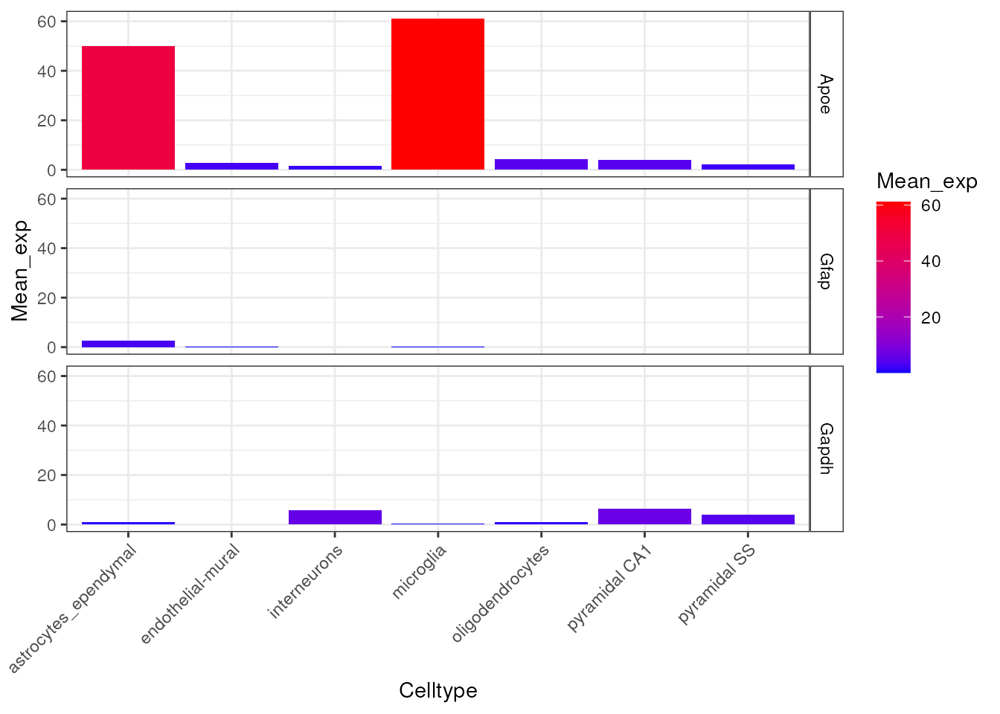
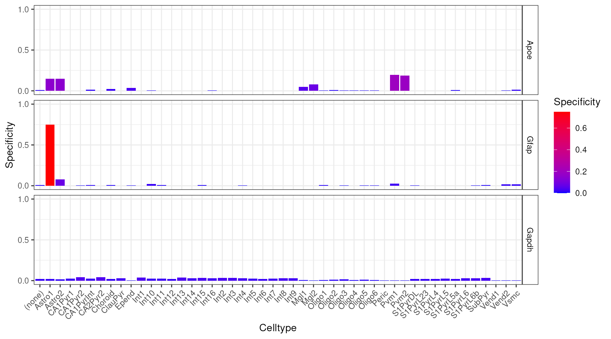
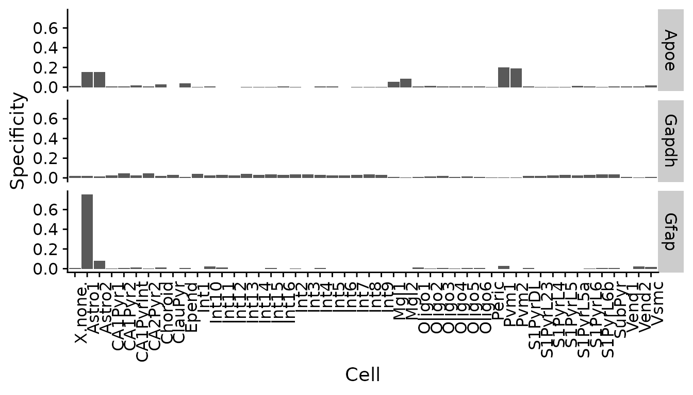

vignettes/EWCE.Rmd
EWCE.RmdThe EWCE R package is designed to facilitate expression weighted cell type enrichment analysis as described in our Frontiers in Neuroscience paper.1 EWCE can be applied to any gene list.
Using EWCE essentially involves two steps:
ewceData (which comes with EWCE).bootstrap_enrichment_test function.NOTE: This documentation is for the development version of EWCE. See Bioconductor for documentation on the current release version.
Load a CTD previously generated from mouse cortex and hypothalamus single-cell RNA-seq data (from the Karolinska Institute).
Each level of a CTD corresponds to increasingly refined cell-type/-subtype annotations. For example, in the CTD ewceData::ctd() level 1 includes the cell-type “interneurons”, while level 2 breaks these this group into 16 different interneuron subtypes (“Int…”).
ctd <- ewceData::ctd()## snapshotDate(): 2022-01-04## see ?ewceData and browseVignettes('ewceData') for documentation## loading from cachePlot the expression of four markers genes across all cell types in the CTD.
plt_exp <- EWCE::plot_ctd(ctd = ctd,
level = 1,
genes = c("Apoe","Gfap","Gapdh"),
metric = "mean_exp")
plt_spec <- EWCE::plot_ctd(ctd = ctd,
level = 2,
genes = c("Apoe","Gfap","Gapdh"),
metric = "specificity")
Gene lists input into EWCE can comes from any source (e.g. GWAS, candidate genes, pathways).
Here, we provide an example gene list of Alzheimer’s disease-related nominated from a GWAS.
hits <- ewceData::example_genelist()## see ?ewceData and browseVignettes('ewceData') for documentation## loading from cache
print(hits)## [1] "APOE" "BIN1" "CLU" "ABCA7" "CR1" "PICALM"
## [7] "MS4A6A" "CD33" "MS4A4E" "CD2AP" "EOGA1" "INPP5D"
## [13] "MEF2C" "HLA-DRB5" "ZCWPW1" "NME8" "PTK2B" "CELF1"
## [19] "SORL1" "FERMT2" "SLC24A4" "CASS4"We now run the cell type enrichment tests on the gene list. Since the CTD is from mouse data (and is annotated using mouse genes) we specify the argument sctSpecies="mouse". bootstrap_enrichment_test will automaticlaly convert the mouse genes to human genes.
Since the gene list came from GWAS in humans, we set genelistSpecies="human".
Note: We set the seed at the top of this vignette to ensure reproducibility in the bootstrap sampling function.
Note: We use 100 repetitions here for the purposes of a quick example, but in practice you would want to use reps=10000 for publishable results.
You can now speed up the bootstrapping process by parallelising across multiple cores with the parameter no_cores (=1 by default).
reps <- 100
annotLevel <- 1
full_results <- EWCE::bootstrap_enrichment_test(sct_data = ctd,
sctSpecies = "mouse",
genelistSpecies = "human",
hits = hits,
reps = reps,
annotLevel = annotLevel)## 1 core(s) assigned as workers (1reserved).## Generating gene background for mouse x human ==> human## Retrieving all organisms available in gprofiler.## Using stored `gprofiler_orgs`.## Mapping species name: mouse## Common name mapping found for mouse## 1 organism identified from search: mmusculus## Retrieving all organisms available in gprofiler.## Using stored `gprofiler_orgs`.## Mapping species name: human## Common name mapping found for human## 1 organism identified from search: hsapiens## Retrieving all genes using: homologene.## Retrieving all organisms available in gprofiler.## Using stored `gprofiler_orgs`.## Mapping species name: mmusculus## 1 organism identified from search: 10090## Gene table with 21,207 rows retrieved.## Returning all 21,207 genes from mmusculus.## Retrieving all genes using: homologene.## Retrieving all organisms available in gprofiler.## Using stored `gprofiler_orgs`.## Mapping species name: hsapiens## 1 organism identified from search: 9606## Gene table with 19,129 rows retrieved.## Returning all 19,129 genes from hsapiens.## Preparing gene_df.## data.frame format detected.## Extracting genes from Gene.Symbol.## 21,207 genes extracted.## Converting mmusculus ==> hsapiens orthologs using: homologene## Retrieving all organisms available in gprofiler.## Using stored `gprofiler_orgs`.## Mapping species name: mmusculus## 1 organism identified from search: 10090## Retrieving all organisms available in gprofiler.## Using stored `gprofiler_orgs`.## Mapping species name: hsapiens## 1 organism identified from search: 9606## Checking for genes without orthologs in hsapiens.## Extracting genes from input_gene.## 17,355 genes extracted.## Extracting genes from ortholog_gene.## 17,355 genes extracted.## Checking for genes without 1:1 orthologs.## Dropping 131 genes that have multiple input_gene per ortholog_gene.## Dropping 498 genes that have multiple ortholog_gene per input_gene.## Filtering gene_df with gene_map## Adding input_gene col to gene_df.## Adding ortholog_gene col to gene_df.##
## =========== REPORT SUMMARY ===========## Total genes dropped after convert_orthologs :
## 4,725 / 21,207 (22%)## Total genes remaining after convert_orthologs :
## 16,482 / 21,207 (78%)##
## =========== REPORT SUMMARY ===========## 16,482 / 21,207 (77.72%) target_species genes remain after ortholog conversion.## 16,482 / 19,129 (86.16%) reference_species genes remain after ortholog conversion.## Retrieving all organisms available in gprofiler.## Using stored `gprofiler_orgs`.## Mapping species name: human## Common name mapping found for human## 1 organism identified from search: hsapiens## Retrieving all organisms available in gprofiler.## Using stored `gprofiler_orgs`.## Mapping species name: human## Common name mapping found for human## 1 organism identified from search: hsapiens## Retrieving all genes using: homologene.## Retrieving all organisms available in gprofiler.## Using stored `gprofiler_orgs`.## Mapping species name: hsapiens## 1 organism identified from search: 9606## Gene table with 19,129 rows retrieved.## Returning all 19,129 genes from hsapiens.##
## =========== REPORT SUMMARY ===========## 19,129 / 19,129 (100%) target_species genes remain after ortholog conversion.## 19,129 / 19,129 (100%) reference_species genes remain after ortholog conversion.## 16,482 intersect background genes used.## Standardising CellTypeDataset## Converting to sparse matrix.
## Converting to sparse matrix.## Checking gene list inputs.## Retrieving all genes using: homologene.## Retrieving all organisms available in gprofiler.## Using stored `gprofiler_orgs`.## Mapping species name: human## Common name mapping found for human## 1 organism identified from search: 9606## Gene table with 19,129 rows retrieved.## Returning all 19,129 genes from human.## Standardising sct_data.## Converting gene list input to standardised human genes.## Running without gene size control.## 17 hit genes remain after filtering.## Computing summed proportions.## Testing for enrichment in 7 cell types...## Sorting results by p-value.## Computing BH-corrected q-values.## 1 significant cell type enrichment results @ q<0.05 :## CellType annotLevel p fold_change sd_from_mean q
## 1 microglia 1 0 2.003754 3.822969 0The main table of results is stored in full_results$results.
In this case, microglia were the only cell type that was significantly enriched in the Alzheimer’s disease gene list.
knitr::kable(full_results$results)| CellType | annotLevel | p | fold_change | sd_from_mean | q | |
|---|---|---|---|---|---|---|
| microglia | microglia | 1 | 0.00 | 2.0037539 | 3.8229690 | 0.000 |
| astrocytes_ependymal | astrocytes_ependymal | 1 | 0.11 | 1.3594176 | 1.4291523 | 0.385 |
| oligodendrocytes | oligodendrocytes | 1 | 0.78 | 0.7903958 | -0.8909301 | 1.000 |
| endothelial_mural | endothelial_mural | 1 | 0.83 | 0.7587306 | -0.9521828 | 1.000 |
| pyramidal_SS | pyramidal_SS | 1 | 0.84 | 0.8338200 | -0.9271986 | 1.000 |
| pyramidal_CA1 | pyramidal_CA1 | 1 | 0.90 | 0.7882024 | -1.1989117 | 1.000 |
| interneurons | interneurons | 1 | 1.00 | 0.3868205 | -3.1123590 | 1.000 |
The results can be visualised using another function, which shows for each cell type, the number of standard deviations from the mean the level of expression was found to be in the target gene list, relative to the bootstrapped mean.
The dendrogram at the top shows how the cell types are hierarchically clustered by transcriptional similarity.
plot_list <- EWCE::ewce_plot(total_res = full_results$results,
mtc_method = "BH",
ctd = ctd)## Loading required namespace: cowplot## Loading required namespace: gridExtra## Scale for 'x' is already present. Adding another scale for 'x', which will
## replace the existing scale.
print(plot_list$withDendro)
ewce is now available via DockerHub as a containerised environment with Rstudio and all necessary dependencies pre-installed.
First, install Docker if you have not already.
Create an image of the Docker container in command line:
docker pull neurogenomicslab/ewceOnce the image has been created, you can launch it with:
docker run \
-d \
--rm \
-e ROOT=true \
-e PASSWORD=bioc \
-v ~/Desktop:/Desktop \
-v /Volumes:/Volumes \
-p 8788:8787 \
neurogenomicslab/ewce-d ensures the container will run in “detached” mode, which means it will persist even after you’ve closed your command line session.-e PASSWORD=... flag.If you are using a system that does not allow Docker (as is the case for many institutional computing clusters), you can instead install Docker images via Singularity.
singularity pull docker://neurogenomicslab/ewceFinally, launch the containerised Rstudio by entering the following URL in any web browser: http://localhost:8788/
Login using the credentials set during the Installation steps.
utils::sessionInfo()## R Under development (unstable) (2021-12-30 r81418)
## Platform: x86_64-pc-linux-gnu (64-bit)
## Running under: Ubuntu 20.04.3 LTS
##
## Matrix products: default
## BLAS/LAPACK: /usr/lib/x86_64-linux-gnu/openblas-pthread/libopenblasp-r0.3.8.so
##
## locale:
## [1] LC_CTYPE=en_US.UTF-8 LC_NUMERIC=C
## [3] LC_TIME=en_US.UTF-8 LC_COLLATE=en_US.UTF-8
## [5] LC_MONETARY=en_US.UTF-8 LC_MESSAGES=C
## [7] LC_PAPER=en_US.UTF-8 LC_NAME=C
## [9] LC_ADDRESS=C LC_TELEPHONE=C
## [11] LC_MEASUREMENT=en_US.UTF-8 LC_IDENTIFICATION=C
##
## attached base packages:
## [1] stats graphics grDevices utils datasets methods base
##
## other attached packages:
## [1] ewceData_1.3.0 ExperimentHub_2.3.4 AnnotationHub_3.3.7
## [4] BiocFileCache_2.3.3 dbplyr_2.1.1 BiocGenerics_0.41.2
## [7] EWCE_1.3.3 RNOmni_1.0.0 BiocStyle_2.23.1
##
## loaded via a namespace (and not attached):
## [1] colorspace_2.0-2 ggsignif_0.6.3
## [3] ellipsis_0.3.2 rprojroot_2.0.2
## [5] XVector_0.35.0 GenomicRanges_1.47.5
## [7] fs_1.5.2 farver_2.1.0
## [9] ggpubr_0.4.0 bit64_4.0.5
## [11] interactiveDisplayBase_1.33.0 AnnotationDbi_1.57.1
## [13] fansi_0.5.0 orthogene_1.1.1
## [15] cachem_1.0.6 knitr_1.37
## [17] jsonlite_1.7.2 broom_0.7.11
## [19] png_0.1-7 shiny_1.7.1
## [21] BiocManager_1.30.16 compiler_4.2.0
## [23] httr_1.4.2 backports_1.4.1
## [25] lazyeval_0.2.2 assertthat_0.2.1
## [27] Matrix_1.4-0 fastmap_1.1.0
## [29] limma_3.51.2 later_1.3.0
## [31] htmltools_0.5.2 tools_4.2.0
## [33] gtable_0.3.0 glue_1.6.0
## [35] GenomeInfoDbData_1.2.7 reshape2_1.4.4
## [37] dplyr_1.0.7 rappdirs_0.3.3
## [39] Rcpp_1.0.7 carData_3.0-5
## [41] Biobase_2.55.0 jquerylib_0.1.4
## [43] pkgdown_2.0.1.9000 vctrs_0.3.8
## [45] Biostrings_2.63.0 babelgene_21.4
## [47] xfun_0.29 stringr_1.4.0
## [49] mime_0.12 lifecycle_1.0.1
## [51] rstatix_0.7.0 zlibbioc_1.41.0
## [53] scales_1.1.1 ragg_1.2.1
## [55] promises_1.2.0.1 MatrixGenerics_1.7.0
## [57] parallel_4.2.0 SummarizedExperiment_1.25.3
## [59] gprofiler2_0.2.1 SingleCellExperiment_1.17.2
## [61] yaml_2.2.1 curl_4.3.2
## [63] gridExtra_2.3 memoise_2.0.1
## [65] ggplot2_3.3.5 sass_0.4.0
## [67] stringi_1.7.6 RSQLite_2.2.9
## [69] highr_0.9 BiocVersion_3.15.0
## [71] S4Vectors_0.33.8 desc_1.4.0
## [73] filelock_1.0.2 BiocParallel_1.29.8
## [75] GenomeInfoDb_1.31.1 rlang_0.4.12
## [77] pkgconfig_2.0.3 systemfonts_1.0.3
## [79] bitops_1.0-7 matrixStats_0.61.0
## [81] evaluate_0.14 lattice_0.20-45
## [83] purrr_0.3.4 labeling_0.4.2
## [85] patchwork_1.1.1 htmlwidgets_1.5.4
## [87] cowplot_1.1.1 bit_4.0.4
## [89] tidyselect_1.1.1 plyr_1.8.6
## [91] magrittr_2.0.1 bookdown_0.24
## [93] R6_2.5.1 IRanges_2.29.1
## [95] generics_0.1.1 DelayedArray_0.21.2
## [97] DBI_1.1.2 withr_2.4.3
## [99] pillar_1.6.4 KEGGREST_1.35.0
## [101] abind_1.4-5 RCurl_1.98-1.5
## [103] tibble_3.1.6 homologene_1.4.68.19.3.27
## [105] crayon_1.4.2 car_3.0-12
## [107] utf8_1.2.2 plotly_4.10.0
## [109] rmarkdown_2.11 grid_4.2.0
## [111] data.table_1.14.2 blob_1.2.2
## [113] digest_0.6.29 xtable_1.8-4
## [115] HGNChelper_0.8.1 tidyr_1.1.4
## [117] httpuv_1.6.5 textshaping_0.3.6
## [119] stats4_4.2.0 munsell_0.5.0
## [121] viridisLite_0.4.0 bslib_0.3.1